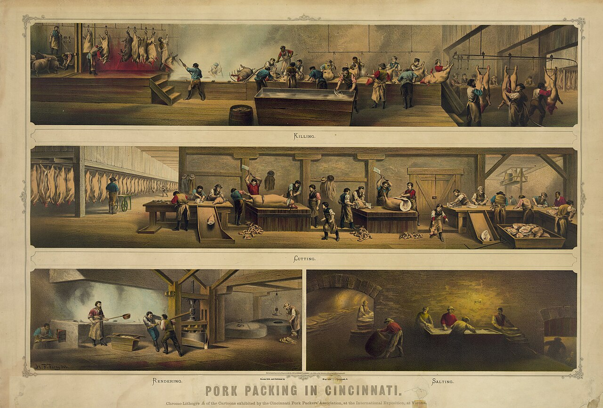
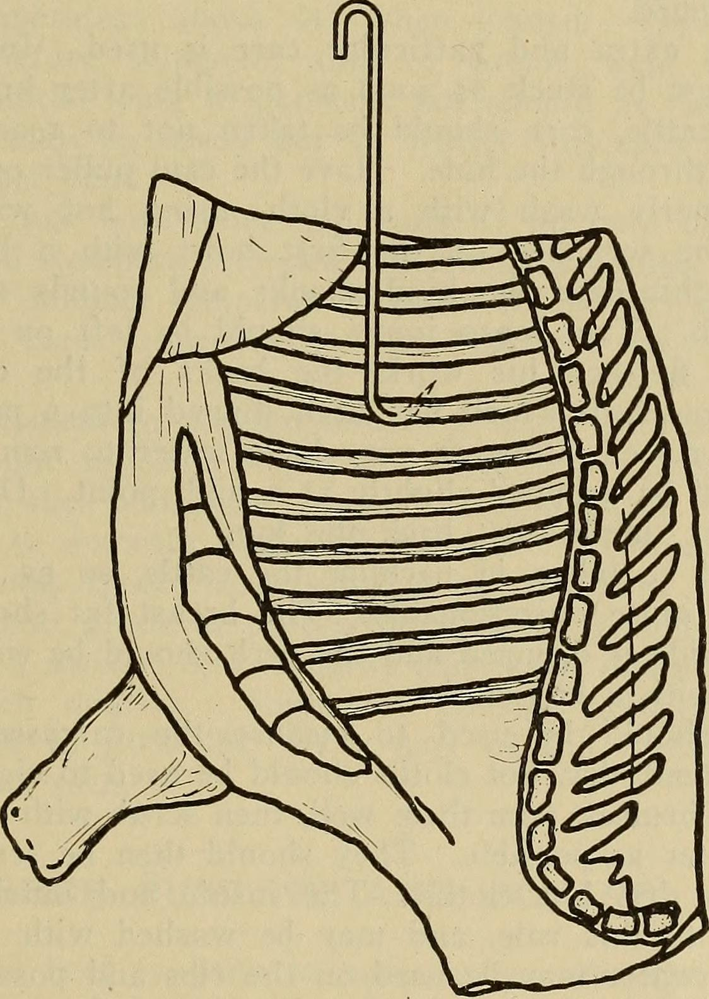

Our Story
For three generations, Ironridge has supplied restaurants, grocers, and distributors across the Midwest with USDA-inspected beef, pork, and poultry. Our 80,000 sq ft facility processes over 2 million pounds of meat monthly, all under strict quality and safety standards.
We started as a single-room butcher shop on the outskirts of Sioux Falls and grew, order by order, into one of the region's most dependable wholesale meat processors. We still run the business the way it started: answer the phone, cut it right, ship it on time.
Company History
1962 — The Beginning
Founder Walt Ironridge opens a small butcher shop and locker plant in Sioux Falls, South Dakota, serving local ranchers and grocers.
1978 — Wholesale Expansion
The plant expands into full wholesale distribution, supplying restaurants and grocery chains throughout South Dakota, Minnesota, and Iowa.
1991 — USDA Federal Inspection
Ironridge earns USDA Establishment status (#4471), allowing shipment of beef, pork, and poultry across state lines.
2005 — New 80,000 sq ft Facility
The current plant opens on Industrial Pkwy, tripling processing capacity and adding dedicated poultry and specialty lines.
2016 — SQF Level 3 Certification
Ironridge achieves SQF Level 3 certification, one of the highest third-party food safety benchmarks in the industry.
Today — Third Generation
Now run by the founder's grandchildren, Ironridge processes over 2 million pounds of meat monthly for buyers across the Midwest.
Inside the Plant

